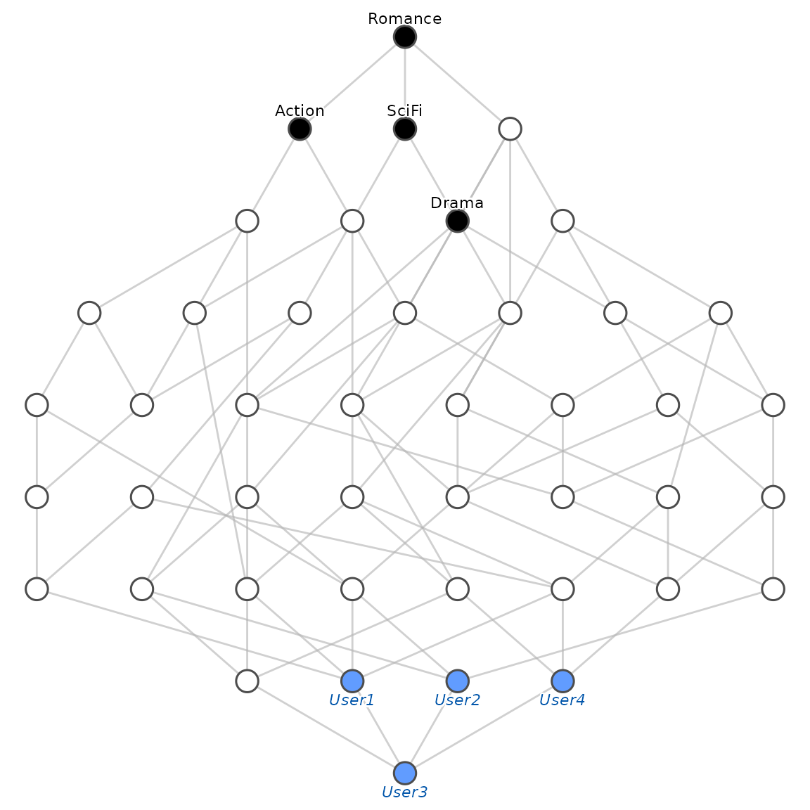

Introduction
Traditional Formal Concept Analysis (FCA) deals with binary data: an object either possesses an attribute or not. However, real-world data is often graded. For instance, a user might like a movie to a certain degree, or a patient might show a symptom with a specific intensity.
Fuzzy FCA generalizes the theory to handle degrees
of membership in the interval
.
fcaR natively implements this framework, allowing the user
to select the underlying fuzzy logic that governs the reasoning
process.
1. Creating a fuzzy formal context
To work with fuzzy logic, you create a FormalContext
from a matrix containing numeric values between 0 and 1.
Let us consider a dataset representing user preferences for different movie genres:
# Matrix with membership degrees
I <- matrix(c(
0.9, 0.1, 0.8, 0.0,
0.2, 1.0, 0.0, 0.9,
0.5, 0.5, 0.5, 0.5,
0.0, 0.8, 0.1, 1.0
), nrow = 4, byrow = TRUE)
rownames(I) <- c("User1", "User2", "User3", "User4")
colnames(I) <- c("Action", "Romance", "SciFi", "Drama")
fc <- FormalContext$new(I)
print(fc)
#> FormalContext with 4 objects and 4 attributes.
#> Action Romance SciFi Drama
#> User1 0.9 0.1 0.8 0
#> User2 0.2 1 0 0.9
#> User3 0.5 0.5 0.5 0.5
#> User4 0 0.8 0.1 12. Fuzzy logics and operators
In Fuzzy FCA, the structure of the lattice and the validity of implications depend on the choice of the fuzzy logic. A logic is defined by an adjoint pair of operators:
- T-norm (): Models the conjunction (AND).
- Residuum (): Models the implication (IF…THEN).
While the intersection of fuzzy sets (used for the infimum in the lattice) is typically modeled by the minimum, the derivation operators that form the concepts rely on the residuum:
fcaR implements the following logics:
Available logics
-
Lukasiewicz:
- T-norm:
- Residuum:
- Use case: Ideal for capturing precise graded dependencies and avoiding drastic information loss.
-
Gödel (also referred to as Zadeh in
fcaR):- T-norm:
- Residuum:
- Use case: Useful when only the order of values matters, not their exact magnitude.
-
Product (Goguen):
- T-norm:
- Residuum:
By default, fcaR uses Zadeh (Gödel)
logic.
Changing the logic
For rigorous analysis where magnitude differences matter, Lukasiewicz is often the standard recommendation.
# Switch to Lukasiewicz logic
fc$use_logic("Lukasiewicz")
fc$get_logic()
#> [1] "Lukasiewicz"Changing the logic changes the definition of , and therefore, the concepts and implications that will be discovered.
3. Mining fuzzy concepts
We compute the concept lattice using the selected logic. A fuzzy concept is a pair of fuzzy sets (vectors of values in ) closed under the derivation operators.
fc$find_concepts()
fc$concepts
#> A set of 44 concepts:
#> 1: ({User1, User2, User3, User4}, {Romance [0.10]})
#> 2: ({User1, User2, User3}, {Action [0.20], Romance [0.10]})
#> 3: ({User1, User2 [0.20], User3}, {Action [0.50], Romance [0.10]})
#> 4: ({User1, User2 [0.20], User3 [0.50]}, {Action [0.90], Romance [0.10]})
#> 5: ({User1 [0.90], User2 [0.20], User3 [0.50]}, {Action, Romance [0.10]})
#> 6: ({User1 [0.10], User2, User3, User4}, {Romance [0.50]})
#> 7: ({User1 [0.10], User2, User3 [0.50], User4}, {Romance [0.80]})
#> 8: ({User1 [0.10], User2, User3 [0.50], User4 [0.80]}, {Romance})
#> 9: ({User1, User3, User4}, {Romance [0.10], SciFi [0.10]})
#> 10: ({User1, User3, User4 [0.10]}, {Romance [0.10], SciFi [0.50]})
#> 11: ({User1, User3 [0.50], User4 [0.10]}, {Romance [0.10], SciFi [0.80]})
#> 12: ({User1 [0.80], User3 [0.50], User4 [0.10]}, {Romance [0.10], SciFi})
#> 13: ({User1 [0.10], User2, User3}, {Action [0.20], Romance [0.50]})
#> 14: ({User1 [0.10], User2, User3 [0.50]}, {Action [0.20], Romance})
#> 15: ({User2, User3}, {Action [0.20], Romance [0.50], Drama [0.50]})
#> 16: ({User2, User3 [0.50]}, {Action [0.20], Romance, Drama [0.90]})
#> 17: ({User2 [0.90], User3 [0.50]}, {Action [0.20], Romance, Drama})
#> 18: ({User1 [0.10], User2 [0.20], User3}, {Action [0.50], Romance [0.50]})
#> 19: ({User1, User3}, {Action [0.50], Romance [0.10], SciFi [0.50]})
#> 20: ({User1 [0.10], User3}, {Action [0.50], Romance [0.50], SciFi [0.50]})
#> 21: ({User2 [0.20], User3}, {Action [0.50], Romance [0.50], Drama [0.50]})
#> 22: ({User3}, {Action [0.50], Romance [0.50], SciFi [0.50], Drama [0.50]})
#> 23: ({User1, User3 [0.50]}, {Action [0.90], Romance [0.10], SciFi [0.80]})
#> 24: ({User1 [0.10], User2 [0.20], User3 [0.50]}, {Action, Romance})
#> 25: ({User1 [0.90], User3 [0.50]}, {Action, Romance [0.10], SciFi [0.80]})
#> 26: ({User1 [0.80], User3 [0.50]}, {Action, Romance [0.10], SciFi})
#> 27: ({User1 [0.10], User3 [0.50]}, {Action, Romance, SciFi})
#> 28: ({User2 [0.20], User3 [0.50]}, {Action, Romance, Drama})
#> 29: ({User3 [0.50]}, {Action, Romance, SciFi, Drama})
#> 30: ({User1 [0.10], User3, User4}, {Romance [0.50], SciFi [0.10]})
#> 31: ({User1 [0.10], User3, User4 [0.10]}, {Romance [0.50], SciFi [0.50]})
#> 32: ({User2, User3, User4}, {Romance [0.50], Drama [0.50]})
#> 33: ({User3, User4}, {Romance [0.50], SciFi [0.10], Drama [0.50]})
#> 34: ({User3, User4 [0.10]}, {Romance [0.50], SciFi [0.50], Drama [0.50]})
#> 35: ({User1 [0.10], User3 [0.50], User4}, {Romance [0.80], SciFi [0.10]})
#> 36: ({User2, User3 [0.50], User4}, {Romance [0.80], Drama [0.90]})
#> 37: ({User2 [0.90], User3 [0.50], User4}, {Romance [0.80], Drama})
#> 38: ({User3 [0.50], User4}, {Romance [0.80], SciFi [0.10], Drama})
#> 39: ({User1 [0.10], User3 [0.50], User4 [0.80]}, {Romance, SciFi [0.10]})
#> 40: ({User1 [0.10], User3 [0.50], User4 [0.10]}, {Romance, SciFi})
#> 41: ({User2, User3 [0.50], User4 [0.80]}, {Romance, Drama [0.90]})
#> 42: ({User2 [0.90], User3 [0.50], User4 [0.80]}, {Romance, Drama})
#> 43: ({User3 [0.50], User4 [0.80]}, {Romance, SciFi [0.10], Drama})
#> 44: ({User3 [0.50], User4 [0.10]}, {Romance, SciFi, Drama})We can inspect the membership degrees of a specific concept. Note that an object can now belong “partially” to a concept.
# Select a concept (e.g., the 4th one)
C <- fc$concepts$sub(4)
# Extent (Degrees of objects)
C$get_extent()
#> {User1, User2 [0.2], User3 [0.5]}
# Intent (Degrees of attributes)
C$get_intent()
#> {Action [0.9], Romance [0.1]}4. Visualization
The resulting fuzzy lattice can be visualized as a Hasse diagram. The hierarchical structure is preserved based on the inclusion of fuzzy sets.
fc$concepts$plot(mode = "reduced", method = "sugiyama")
5. Fuzzy implications
Fuzzy implications take the form , where and are fuzzy sets of attributes. The validity of these rules depends on the selected logic.
fcaR uses advanced algorithms (such as GreConD) adapted
to handle degrees of confidence.
fc$find_implications()
fc$implications
#> Implication set with 26 implications.
#> Rule 1: {} -> {Romance [0.1]}
#> Rule 2: {Romance [0.1], Drama [0.1]} -> {Romance [0.2]}
#> Rule 3: {Romance [0.1], SciFi [0.2]} -> {Action [0.1]}
#> Rule 4: {Romance [0.2]} -> {Drama [0.1]}
#> Rule 5: {Romance [0.2], Drama [0.2]} -> {Romance [0.3]}
#> Rule 6: {Romance [0.5], Drama [0.1]} -> {Drama [0.4]}
#> Rule 7: {Romance [0.5], Drama [0.8]} -> {Romance [0.8]}
#> Rule 8: {Romance [0.8], Drama [0.4]} -> {Drama [0.7]}
#> Rule 9: {Romance [0.8], Drama} -> {SciFi [0.1]}
#> Rule 10: {Romance [0.9], Drama [0.7]} -> {Action [0.1], Drama [0.8]}
#> Rule 11: {Action [0.1], Romance [0.1], SciFi [0.5]} -> {Action [0.4]}
#> Rule 12: {Action [0.1], Romance [0.8], Drama [0.9]} -> {Romance [0.9]}
#> Rule 13: {Action [0.1], Romance, Drama [0.8]} -> {Action [0.2], Drama [0.9]}
#> Rule 14: {Action [0.2], Romance [0.9], SciFi [0.1], Drama} -> {Romance}
#> Rule 15: {Action [0.5], Romance [0.1]} -> {SciFi [0.3]}
#> Rule 16: {Action [0.5], Romance [0.1], SciFi [0.8]} -> {Action [0.7]}
#> Rule 17: {Action [0.8], Romance [0.1], SciFi [0.3]} -> {SciFi [0.6]}
#> Rule 18: {Action [0.8], Romance [0.1], SciFi [0.9]} -> {Romance [0.2], Drama
#> [0.1]}
#> Rule 19: {Action [0.8], Romance [0.2], SciFi, Drama [0.1]} -> {Action [0.9],
#> Romance [0.3], Drama [0.2]}
#> Rule 20: {Action [0.8], Romance [0.5], SciFi [0.6], Drama [0.5]} -> {Romance
#> [0.6]}
#> Rule 21: {Action [0.8], Romance [0.8], SciFi [0.9], Drama [0.8]} -> {Romance
#> [0.9]}
#> Rule 22: {Action [0.9], Romance [0.1], SciFi [0.6]} -> {SciFi [0.7]}
#> Rule 23: {Action [0.9], Romance [0.8], SciFi [0.7], Drama [0.8]} -> {Romance
#> [0.9]}
#> Rule 24: {Action [0.9], Romance [0.9], SciFi, Drama [0.9]} -> {Romance}
#> Rule 25: {Action, Romance [0.1], SciFi [0.7]} -> {Romance [0.2], SciFi [0.8],
#> Drama [0.1]}
#> Rule 26: {Action, Romance [0.9], SciFi [0.8], Drama [0.9]} -> {Romance}Support and confidence
In the fuzzy setting:
- Support: The sum (or average) of degrees to which objects satisfy the antecedent.
- Confidence: The degree of truth of the implication accumulated over all objects.
With Lukasiewicz logic, confidence measures “how much is lost” when passing from to . A confidence of 1 means that for every object, the degree of is less than or equal to the degree of (plus the residuum adjustment).
# Filter strong rules
fc$implications[fc$implications$support() > 0.2]
#> Implication set with 17 implications.
#> Rule 1: {} -> {Romance [0.1]}
#> Rule 2: {Romance [0.1], Drama [0.1]} -> {Romance [0.2]}
#> Rule 3: {Romance [0.1], SciFi [0.2]} -> {Action [0.1]}
#> Rule 4: {Romance [0.2]} -> {Drama [0.1]}
#> Rule 5: {Romance [0.2], Drama [0.2]} -> {Romance [0.3]}
#> Rule 6: {Romance [0.5], Drama [0.1]} -> {Drama [0.4]}
#> Rule 7: {Romance [0.5], Drama [0.8]} -> {Romance [0.8]}
#> Rule 8: {Romance [0.8], Drama [0.4]} -> {Drama [0.7]}
#> Rule 9: {Romance [0.8], Drama} -> {SciFi [0.1]}
#> Rule 10: {Romance [0.9], Drama [0.7]} -> {Action [0.1], Drama [0.8]}
#> Rule 11: {Action [0.1], Romance [0.1], SciFi [0.5]} -> {Action [0.4]}
#> Rule 12: {Action [0.1], Romance [0.8], Drama [0.9]} -> {Romance [0.9]}
#> Rule 13: {Action [0.1], Romance, Drama [0.8]} -> {Action [0.2], Drama [0.9]}
#> Rule 14: {Action [0.5], Romance [0.1]} -> {SciFi [0.3]}
#> Rule 15: {Action [0.5], Romance [0.1], SciFi [0.8]} -> {Action [0.7]}
#> Rule 16: {Action [0.8], Romance [0.1], SciFi [0.3]} -> {SciFi [0.6]}
#> Rule 17: {Action [0.9], Romance [0.1], SciFi [0.6]} -> {SciFi [0.7]}6. Fuzzy closure and recommendation
The closure() method allows for inference. Given an
observed fuzzy set of attributes (e.g., a new user profile), we can
compute which other attributes should be present according to the logic
of the system.
# Define a new user profile
S <- Set$new(attributes = fc$attributes)
# Likes Action very much, Drama somewhat
S$assign(Action = 1.0, Drama = 0.5)
# Compute the semantic closure using Lukasiewicz logic
closure_S <- fc$implications$closure(S)
# What do we infer about Romance or SciFi?
print(closure_S)
#> $closure
#> {Action, Romance [0.2], SciFi [0.8], Drama [0.5]}